地政学
オタワは大国カナダの首都であり、米国、北極圏、NATO、英連邦、移民政策、先住民政策を扱う中枢です。ガティノーと向き合う川辺は、英仏二言語国家の均衡を日々見せる政治の舞台でもある街です。外交の窓口にもなる場です。
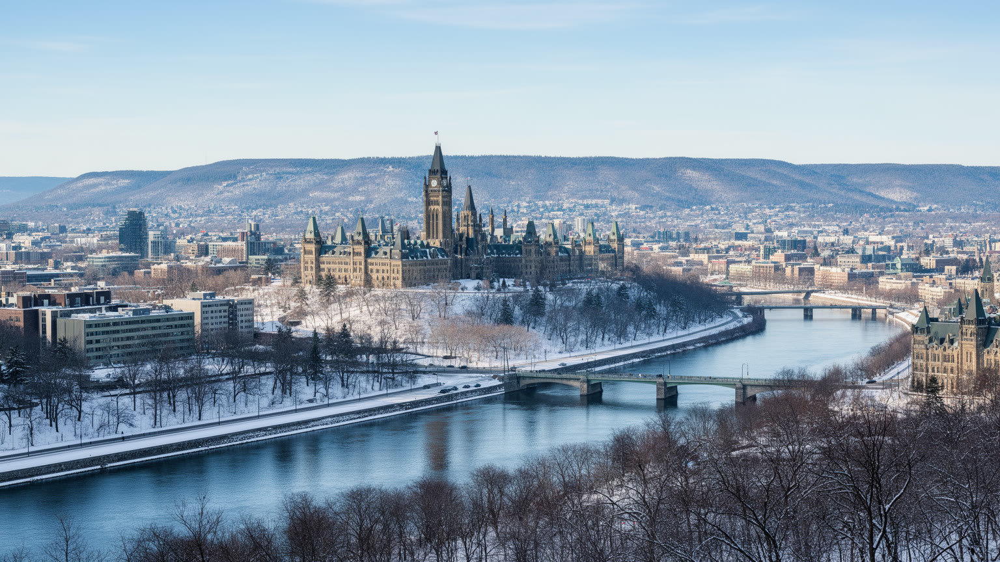
🇨🇦 カナダ / オンタリオ州 / World City Atlas
国会丘と官庁街だけでなく、英仏二言語、先住民の記憶、運河、博物館、大学、テック企業、移民住宅、厳冬の日常が、オタワ川の両岸で重なる首都です。
都市の骨格
オタワは政治の中心であると同時に、オンタリオとケベック、英語とフランス語、国家儀礼と近隣生活が隣り合う都市です。国会丘の象徴性の背後で、公務員、学生、技術者、移民家族、観光客が川沿いの都市圏を日々使っています。
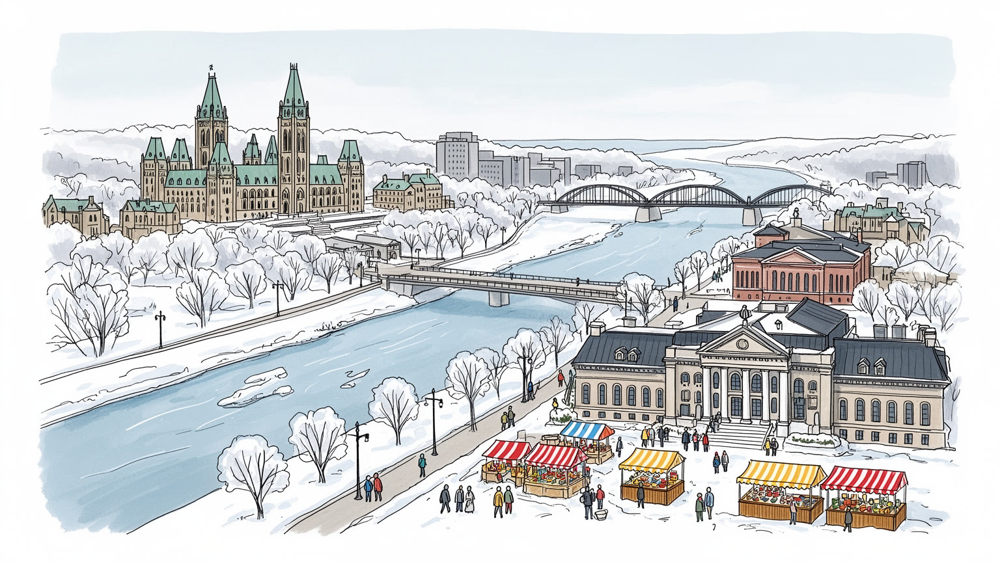
オタワは大国カナダの首都であり、米国、北極圏、NATO、英連邦、移民政策、先住民政策を扱う中枢です。ガティノーと向き合う川辺は、英仏二言語国家の均衡を日々見せる政治の舞台でもある街です。外交の窓口にもなる場です。
連邦政府が最大の雇用基盤で、調達、法律、政策、研究、警備、清掃、通訳、ITが連なります。カナタのテック企業、大学、病院、観光、建設も都市圏を支え、安定と住宅費高騰が同時に進む街です。通勤も課題になる街です。
英語、フランス語、先住民の記憶、移民の信仰、国立博物館、冬祭り、ホッケー観戦が都市の暦を作ります。礼拝施設と無宗教の市民性が並び、首都文化は式典だけでなく食卓にも表れます。音楽祭も市民に身近です。
旅行者は国会丘、運河、市場、博物館を巡り、住民は冬の通勤、住宅、医療、保育と向き合います。スケート、フットボール、夜の音楽、屋台の甘い匂いも首都の日常です。雪の日常も重い街です。買い物も近場で済ませます。
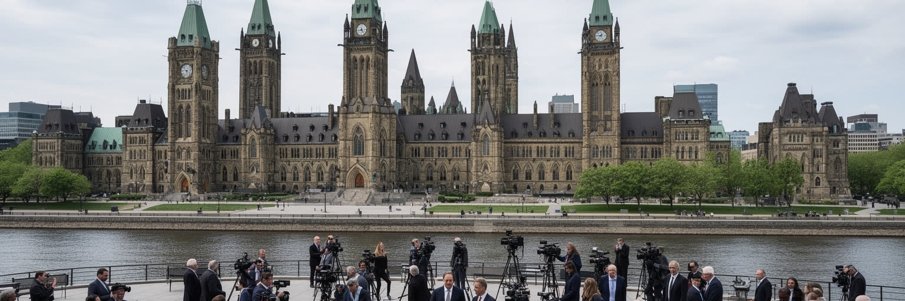
オタワの中心を占める国会丘は、観光写真の背景である前に、カナダという連邦国家が日々交渉を続ける場所です。議会、首相府、最高裁、各省庁、外国公館、報道機関、ロビー団体、労働組合、抗議運動が徒歩圏にあり、政策は街路の動きとしても現れます。移民、先住民との関係、気候政策、資源開発、住宅、国防、北極圏、米国との貿易をめぐる議論は、国会内だけで完結しません。公務員が通う橋、裁判所前の集会、記念碑に置かれる花、官庁の窓口での手続きが、国家を身近な制度に変えます。オタワは商業首都ではないため、都市のリズムは選挙、予算、議会日程、連邦職員の勤務形態に強く影響されます。政治都市の安定は雇用を守りますが、官庁依存は都心の夜間活力や民間起業の幅を狭めることもあります。国会丘を読むには、翻訳者、警備員、清掃員、記者、政策担当者、カフェ従業員の実務を重ねて見る必要があります。Canada Dayの群衆、追悼式、記者会見、議事堂前のSNS中継は、制度が市民の目に触れる瞬間です。地元ラジオは交通規制や抗議の予定を伝え、通勤者の朝を左右します。川に面した高台では、鐘の音、警備車両、観光バス、昼休みのキッチンカーの匂いが同じ広場に混じります。冬の空気も硬く響きます。首都は儀礼の舞台であると同時に、制度を毎日運転する職場でもあります。
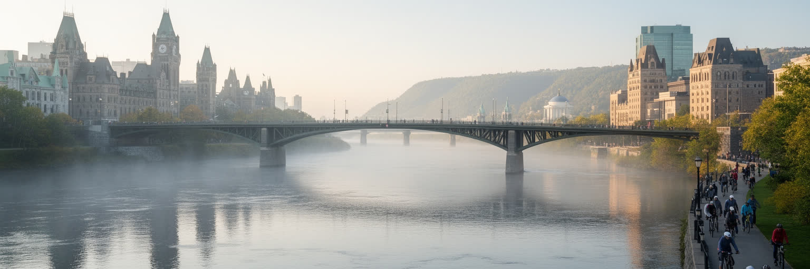
オタワは単独のオンタリオ州都ではなく、オタワ川を挟んでケベック州ガティノーと向き合う首都圏として機能します。橋を渡れば道路標識、学校制度、行政文化、言語環境が変わり、同じ通勤圏に英語圏とフランス語圏の生活が並びます。連邦政府は二言語サービスを支えるため、翻訳、通訳、言語教育、採用、文書管理に大きな労働を必要とします。住民にとって二言語性は理念だけではなく、就職条件、学校選択、保育、医療、賃貸、友人関係に影響する現実です。ガティノー側に住んでオタワ側で働く人も多く、税、保険、公共交通、冬の橋の渋滞は日常の選択を左右します。川は境界でありながら、博物館、サイクリング道、花火、フェリー、散歩道を通じて都市圏を結ぶ公共空間でもあります。夏の川辺ではジョギング、カヤック、フードトラック、野外音楽が混じり、冬は橋を渡るバスの窓が曇ります。看板や式典の言葉、学校のカリキュラム、求人票、裁判文書の細部に、二言語国家を運転する努力が現れます。オタワ川の眺めは美しいですが、その水面には植民地史、連邦制、州権、少数言語の権利、地域経済の差が映ります。首都圏を読むには、川を分断線ではなく、交渉が毎日行われる場所として見ることが欠かせません。橋の上の渋滞や冬の除雪も、二つの州政府と連邦機関が関わる調整の結果です。日常の移動が制度の複雑さを教えてくれます。
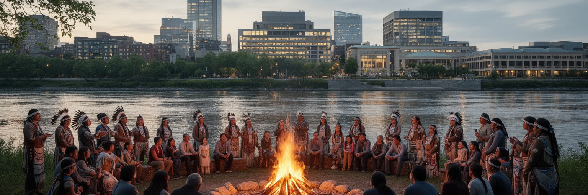
オタワの首都景観は、連邦国家の制度だけでなく、先住民の土地と記憶の上に築かれています。オタワ川流域はアルゴンキン系の人々と深く結びつき、川は交易、移動、食料、儀礼、季節の知識を運ぶ道でした。国会、裁判所、博物館、記念碑が並ぶ現在の中心部で、先住民の主権、条約、土地権、寄宿学校、失踪・殺害された先住民女性、言語復興、都市先住民の福祉をめぐる論点は、遠い歴史ではなく現在の政治です。カナダ歴史博物館や国立美術館の展示、追悼行事、抗議のテント、教育プログラムは、国家が自らの物語をどう語り直すかを問います。首都での承認は象徴的な意味を持ちますが、象徴だけでは住宅、医療、教育、司法、雇用の格差は解決しません。オタワには全国から政策交渉に来る先住民リーダーも、都市で暮らす先住民家族もいます。パウワウ、太鼓、言語教室、若者向けの相談、SNSで共有される追悼行動は、観光的な文化表現を越えた市民の実践です。首都の公共空間が本当に開かれるかは、祝典の場だけでなく、痛みや異議申し立てを受け止める力によって測られます。オタワは和解を掲げる都市であるほど、その言葉を制度と予算へ変える責任を負っています。土地承認の言葉が式典で読まれるだけでなく、都市計画、教育、展示、福祉支援に反映されるかが重要です。川風の中で聞こえる太鼓や演説は、首都の記憶が誰の声で語られるかを問い続けます。
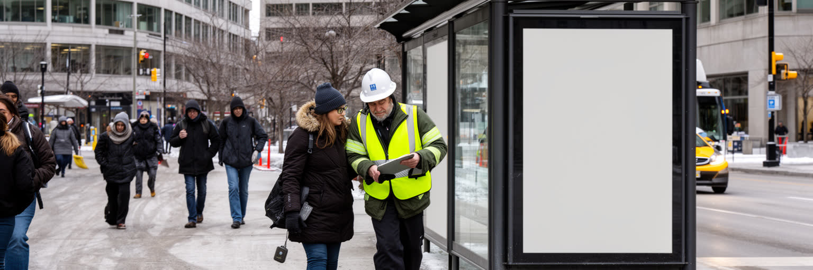
オタワ経済の背骨は連邦政府です。政策、税務、統計、外交、防衛、環境、移民、公共調達、研究助成、文化機関、司法の仕事が集まり、その周囲に法律事務所、コンサルティング、通訳翻訳、警備、清掃、飲食、印刷、IT保守、人材派遣が広がります。公務は景気変動に比較的強く、安定した中間層を作る一方、都市の家賃や住宅価格を押し上げ、民間部門の賃金競争にも影響します。パンデミック後の在宅勤務やハイブリッド勤務は、都心のカフェ、小売、交通、オフィス需要を揺さぶりました。出勤日が減れば家族の時間は増えますが、中心部の昼間人口は減り、バイワード市場や官庁街周辺の商売は打撃を受けます。公務員の働き方は、個人の職場選択を越えて、都市の土地利用と交通政策を変える力を持ちます。連邦政府の調達や研究助成は、地域企業、大学、専門学校の方向性を左右し、若い研究者やインターンの進路にも影響します。オタワで働くとは、国家の制度を支える仕事に近い距離で関わることでもあります。ですが安定した公務の影に、契約労働、低賃金サービス、移民の資格問題、若者の初職の難しさもあります。ランチの屋台、清掃、警備、配達、保育、介護は、首都経済の目立ちにくい足場です。賃金、通勤、保育、病欠への配慮が弱ければ、安定した都市という印象の下で不安定な労働が増えていきます。朝のコーヒー列や夕方のバス停にも、官庁都市の働き方が表れます。
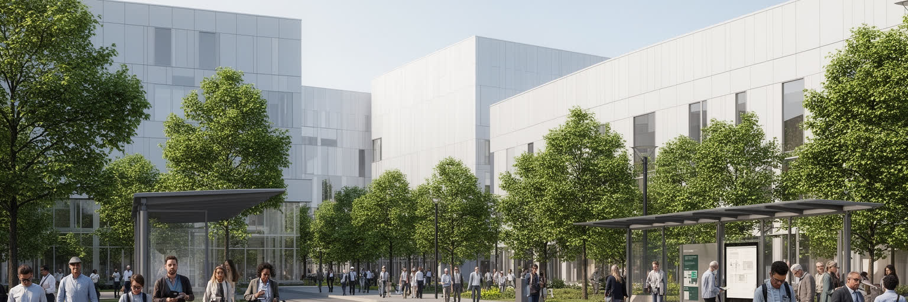
オタワは官庁の街という印象が強いですが、西郊のカナタを中心に通信、半導体、ソフトウェア、防衛技術、サイバーセキュリティ、医療技術の企業が集まります。カールトン大学、オタワ大学、アルゴンキン・カレッジ、連邦研究機関から人材が流れ、政府調達や防衛・通信規制への近さも技術産業の土台になります。カナタのオフィスパークは摩天楼の都心ではなく、自動車通勤、低層ビル、住宅地、学校、ショッピングモールが結びつく郊外型の知識経済です。ここではグローバル企業の研究開発と、地元スタートアップ、移民技術者、インターン学生が同じ労働市場を使います。技術産業は高賃金を生み、税収と都市の多様性を支える一方、住宅価格、通勤距離、技能格差を広げます。公共交通が弱い場所では、車を持てない若者や新移民が機会へアクセスしにくいです。さらに防衛や監視技術に近い分野では、技術の社会的責任も問われます。大学の研究室、図書館、コワーキング空間、郊外のフードコートは、学生と技術者が情報を交換する日常の場です。都心の政策決定とカナタの研究室は離れて見えても、資金、人材、規制、契約で結ばれています。首都の未来は、安定した公務と変化の速い技術産業をどう組み合わせ、住宅と交通を追いつかせるかに左右されます。知識経済を都市の利益に変えるには、研究室だけでなく移動と生活の設計が欠かせません。
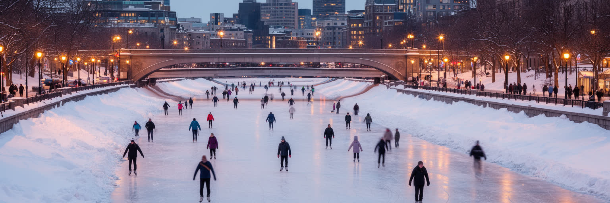
リドー運河はオタワの象徴であり、都市の季節感を最もはっきり見せるインフラです。夏は水辺の散歩道、ボート、サイクリング、大学周辺の余白となり、冬には凍結した運河がスケートリンクとして市民と観光客を引き寄せます。運河沿いでは子どもがスケートを覚え、昼休みの公務員が温かい飲み物を買い、観光客はBeaverTailsの甘い匂いに足を止めます。ただし冬の都市生活は絵葉書の楽しさだけではありません。氷点下の朝、除雪、凍結した歩道、バスの遅れ、暖房費、ホームレス支援、高齢者の移動、通学、雪解け水の排水が日常の論点になります。気候変動で冬の気温が不安定になると、運河スケートの期間は短くなり、伝統的な冬の楽しみも脆くなります。冬祭りWinterludeは観光資源であると同時に、長い寒さを共同で乗り切る文化でもあります。夜には氷上の照明と息の白さが街の記憶になります。屋外で遊べる人と、寒さを避ける場所を持たない人の差は大きいです。オタワの冬は厳しいですが、その厳しさに備える除雪、暖房、公共施設、近隣の助け合いが首都の日常を形づくっています。雪の多い都市では、歩道を先に除雪するか車道を優先するかという判断にも価値観が出ます。冬を楽しめる街にするには、スケートリンクと同じくらい、通勤と福祉の足元を整えることが必要です。
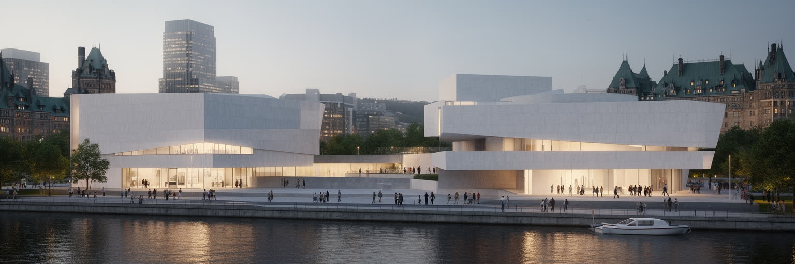
オタワとガティノーには、国立美術館、歴史博物館、戦争博物館、自然博物館、航空宇宙や科学技術の施設が集まり、カナダが自分自身をどう説明するかを示しています。博物館は観光客が雨の日に訪れる場所であるだけでなく、国民の記憶、教育、研究、外交、先住民との関係、戦争と平和、自然環境の理解を組み立てる公共機関です。展示は中立的な倉庫ではありません。何を中心に置き、誰の声を聞き、どの言語で語り、過去の暴力をどこまで見せるかは、政治的で文化的な選択になります。首都の博物館が強いのは、国会や官庁と近く、国家の公式物語と市民の問いが近距離でぶつかるからです。子どもの校外学習、移民家族の初めての訪問、退役軍人の追悼、先住民作家の展示、研究者の資料利用が同じ施設で行われます。近くには国立芸術センターや音楽祭の会場もあり、クラシック、ジャズ、ブルース、先住民アーティスト、学生の演奏が首都の夜を作ります。一方で入館料、交通、言語、障害者アクセス、展示に含まれない地域の記憶は論点として残ります。博物館が都市に開かれるには、威厳ある建物だけでなく、近隣住民が繰り返し使える親しみやすさが必要です。オタワの文化的な力は、国家を一枚の物語にまとめることではなく、複数の記憶を公共の議論へ置く点にあります。展示室で学んだことが、国会前の議論や学校の授業へ戻っていく時、博物館は静かな観光施設を越えて、民主的な学習の基盤になります。
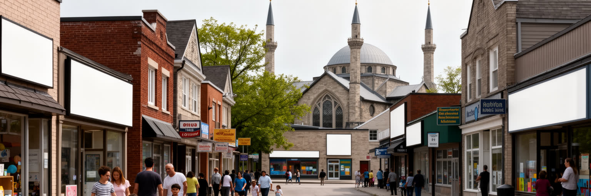
オタワは官庁街の英仏二言語だけでなく、中国系、南アジア系、中東系、アフリカ系、カリブ系、フィリピン系、ラテンアメリカ系などの移民コミュニティによって日々更新されています。レストラン、食料品店、学校、モスク、教会、寺院、シナゴーグ、地域センターは、到着した人々が仕事、言語、保育、医療、住まい、信仰をつなぐ拠点になります。首都で暮らす移民は、連邦制度に近い場所にいながら、資格認定、就職経験、賃貸保証、冬の生活、家族再統合、差別、子どもの学校適応に向き合います。公務員や技術者として働く人もいれば、介護、清掃、配達、飲食、小売、建設を支える人もいます。宗教施設は礼拝の場であるだけでなく、災害時の支援、食料配布、若者の居場所、結婚や葬儀の相談、母語教育を担います。ショーワルマ、カリブ料理、南アジアの菓子、ハラル食材店、コミュニティ祭は、移民の生活が味と匂いで街に現れる場です。多文化性は祭りや料理の豊かさとして見えやすいですが、公共サービスが複数の言語と生活背景に応答できるかで本当の深さが測られます。オタワでは国際政治のニュースが、移民家族の故郷や送金、難民申請、学校の友人関係として身近に現れます。移民の街区を歩くと、国家の人口政策が家庭の食卓と商店街の活気へ変わる過程が見えてきます。寒冷地への適応や職歴の作り直しは簡単ではないため、図書館、学校、宗教施設、SNSの地域グループの小さな支援が定着を支えます。首都の国際性は大使館街だけでなく、こうした生活の網にも宿ります。
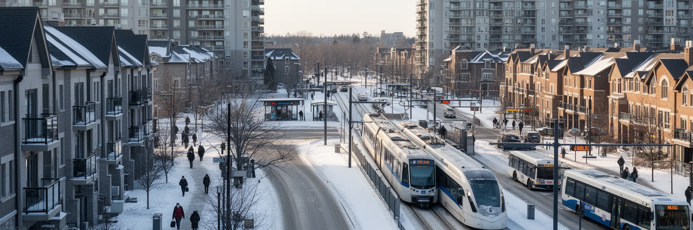
オタワ市は広い市域を持ち、中心部、古い近隣、大学周辺、農村的な外縁、郊外住宅地が一つの自治体に含まれます。人口増加と安定した雇用は住宅需要を押し上げ、賃貸の空き、学生住宅、家族向け住宅、低所得者向け支援、ホームレス対策が重い論点になっています。都心に近い住まいは便利ですが高く、郊外は広い一方で車依存になりやすいです。LRTやバス網は都市を結ぶ骨格として期待される一方、遅延、接続、冬の信頼性、駅周辺の開発、歩道の安全が住民の評価を左右します。通勤時間は単なる不便ではなく、保育の迎え、食事、睡眠、勉強、地域活動を削ります。住宅政策は建物の戸数だけでなく、学校、医療、買い物、図書館、公園、雪の日の歩行環境まで含めて考える必要があります。公務員や技術者の高い購買力は都市を豊かにしますが、サービス労働者、若者、新移民、単身高齢者を中心部から押し出す危険もあります。郊外のアリーナでは子どものホッケー練習、シニアの散歩、買い物帰りのバス待ちが同じ生活圏に重なります。車を持たない人、障害のある人、夜勤の人、冬に長く歩けない人も、仕事と学校と医療へ届くかが重要です。首都の公平性は、国会の近さではなく、毎日の移動が誰に開かれているかに表れます。交通と住宅を別々に扱うほど、暮らしの負担は家庭へ押し戻されます。
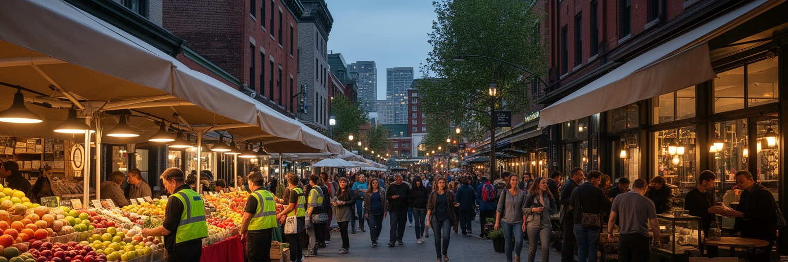
バイワード市場は、オタワの都心が観光、食、夜の娯楽、日常買い物、社会課題を同時に抱える場所です。農産物、花、ベーカリー、カフェ、バー、土産物、屋台、ギャラリー、ホテルが集まり、国会丘や運河から歩いて来る旅行者に首都の親しみやすい顔を見せます。朝は野菜箱とコーヒーの匂い、昼はショーワルマやベーグルの列、夜はパブの音楽、セネターズやレッドブラックスの試合後の声が路地に広がります。一方で中心部には、薬物依存、ホームレス、精神医療、夜間の安全、空き店舗、警備、清掃をめぐる現実もあります。市場を単なる観光地として磨くだけでは、そこで働き、眠り、支援を受け、通過する人々の複雑さを見落とします。都心の活力は、出勤する公務員、大学生、観光客、配達員、露店商、バーの従業員、支援団体、警察、住民の利用が重なって生まれます。地元メディア、ラジオ、SNSは、交通障害、抗議行動、イベント、治安への不安をすぐに共有し、来街者の動きも変えます。安全を高めるには排除だけでなく、住宅支援、医療、街灯、トイレ、公共交通、夜間の帰宅手段、地域の目が必要です。市場の魅力は雑多さにあり、清潔に整えすぎれば都市の生活感は失われます。露店の許可、歩行者空間、夜間交通、支援施設の配置は、賑わいとケアを同じ場所で成立させるための具体的な設計です。都心の魅力は、問題を隠すことではなく、暮らしの複雑さを受け止めながら人を招く力にあります。
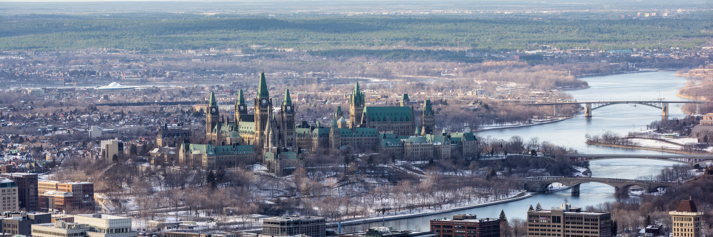
オタワはニューヨークやトロントのような巨大な商業都市ではありません。ですが、その静けさの中にカナダを読むための要点が詰まっています。国会丘は連邦政治を見せ、オタワ川は英仏二言語と州境を見せ、先住民の記憶は国家の未解決の歴史を見せます。官庁街は安定した雇用と制度の重さを作り、カナタの技術産業は首都経済を未来へ広げます。リドー運河と冬の生活は、気候と都市サービスの関係を教え、博物館は国家の物語が常に編集され続けることを示します。移民の街区、宗教施設、住宅難、郊外通勤、バイワード市場の社会課題、グリーンベルトの開発圧力を重ねると、オタワは穏やかな行政都市だけではなく、現代カナダの矛盾が見える場所になります。観光客が数日で巡る国会、運河、博物館の背後には、公務員の働き方、先住民政策、住宅価格、二言語教育、冬の移動、移民家族の生活が続いています。さらにホッケーやフットボール、大学キャンパス、Winterlude、Tulip Festival、Bluesfest、夜の市場、地元ラジオやSNSの速報が、制度都市に生活の熱を与えます。オタワでは国家が抽象的な存在ではなく、橋、窓口、通勤、展示、抗議、雪かき、保育園の待機リストとして現れます。川辺の散歩、国会前の広場、郊外の駅、移民の商店、冬の歩道をつなげて読む時、カナダの制度と生活が一つの地図になります。